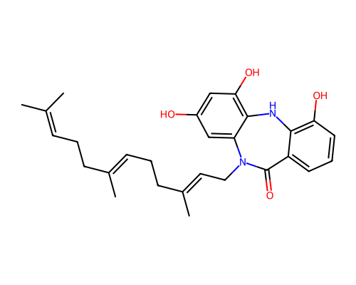

Recorded genus · Micromonospora
Follow source profiles to their compounds, recorded activities and original evidence.
Sources / Bacteria / Recorded genus
Classification follows stored source-name assignments; original identification and evidence states are retained. Activity counts cover associated compounds and do not establish taxon-specific activity.
Browse these source cardsConnection network
Click a node to expand its connections. Drag nodes to arrange the view.
Micromonospora
Only the current neighbourhood is shown. Search or use Next to find other nodes. Shared products have one node and multiple source links. Mixed recorded source labels can occur under more than one genus.
Browse the same connections as lists
1 Recorded genus
2 Source / strain
Select a genus
Sources in this classification appear here.
3 Products
Select a source
See the products and their stored structures.
Select a product to view recorded activity, experimental systems and original evidence.
Lines show stored associations. Node distance does not represent similarity or evidence strength. Product activities are compound-level records; they are not automatically attributable to the selected strain or taxon. Target annotations do not establish direct binding. Original review states and restrictions are retained.
Source profiles
| Source / strain | Recorded genus | Compounds | Source evidence records |
|---|---|---|---|
| Micromonospora robiginosa · 28ISP2-46T (NCIMB 15402T; DSMZ 111791T) | Micromonospora | 1 | 2 checked |
| Micromonospora sp. DPJ12 | Micromonospora | 1 | 1 checked |
| Micromonospora sp. · TP-A0468 | Micromonospora | 1 | 1 checked |
Associated compounds
| Structure | Compound | Formula | Classification | Activity records | Admitted evidence rows |
|---|---|---|---|---|---|
 Structure image unavailable | Diazepinomicin (Eco-4601)Connections → | C28H34N2O4 | Meroterpenoid | 23 | 16 |
 Structure image unavailable Structure image unavailable | KosinostatinConnections → | C33H32N2O10 | Polyketide | 55 | 54 |
Product activities & evidence
Up to two results per compound are shown. Open the compound record for all results, conditions and restrictions.
Preview selection
Shared cited references are prioritized where available. A shared reference does not establish a strain-specific assay or the same experimental sample.
| Product | Recorded results | Result evidence |
|---|---|---|
| Diazepinomicin (Eco-4601) | Candida albicans MIC > 128 μg/mL Evidence detailsPrimary result checkedOther cited reference for this compound Enterococcus faecium MIC = 32 μg/mL Evidence detailsPrimary result checkedOther cited reference for this compound | |
| Kosinostatin | 39 human cancer cell lines individually listed in Table 6 IC50范围0.02–0.98 μM（Table6的39细胞系逐项汇总；HCT-15为0.98，摘要0.02–0.6与表不一致） Evidence detailsPrimary result checkedShared cited reference; experimental attribution unconfirmed Gram-positive bacteria tested in Table 4 (Staphylococcus aureus 209P JC1; Bacillus subtilis ATCC6633) MIC = 0.039 μg/mL（仅原文受试S.aureus209P JC1与B.subtilis ATCC6633，Table4） Evidence detailsPrimary result checkedShared cited reference; experimental attribution unconfirmed |
No records match this search.